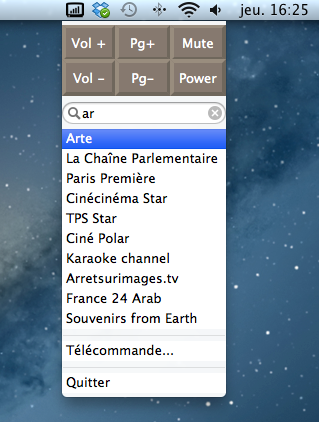

Qu'est-ce?
C'est l'application idéale pour le télé-travail!
Freebox Mini Remote est une petite application qui reste dans la status bar du Mac. Elle offre quelques boutons pour le zapping: changement de chaîne et volume et une fonction de zapping avec completion.
Le but de cette application n'est pas de faire une télécommande complète pour la Freebox, mais bien un zappeur minimal, rapide, et facile d'accès.
Installation?
Il faut télécharger l'application, la glisser dans le répertoire Application et la lancer. la premiere fois il faudra rentrer dans les options le code de la freebox.
Pour lancer Freebox Mini Remote au démarrage, il faut aller dans les préférences, puis compte, ouverture et y ajouter l'app.
Authors and Contributors
Bertrand Boudaud (@bertrandboudaud)